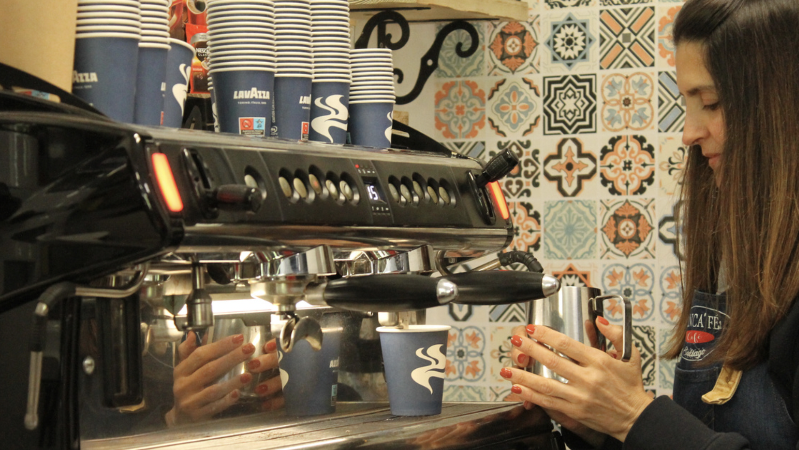
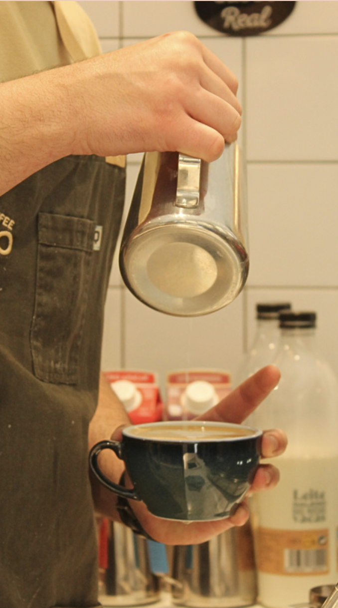

Todas as mañás vemos a alguén tomando un café. Só, cortado, con leite, con sacarina en vez de azucre, acompañado dunha galleta ou dunha magdalena... Ben sexa na casa, no traballo, no bar ou na rúa, sempre vai haber alguén tomando café.
Pero o café non é só unha bebida que aporte as enerxías necesarias para aguantar un longo día, senón tamén un elemento que forma parte da rutina. Hai unha “cultura do café”, sobre todo nos países mediterráneos, que define esta bebida coma un punto de unión nas reunións sociais.
En Compostela, cidade na que gran parte da poboación é universitaria, pódese ver como esta cultura do café define ao estudantado. Preto da biblioteca Concepción Arenal, na Rúa dos Feáns, podemos atopar o Fran CaFé, unha das cafeterías máis frecuentadas polos estudantes.

O local é rexentado por Pablo, un inmigrante brasileiro con familia galega que decidiu montar unha pequena cafetaría que agora é todo un éxito.
A súa oferta variada entre cafés e bollerías converte o local nun lugar perfecto para pedir un café para levar durante as pausas entre temas e exames.
A cafetaría Bo&Go ofrece tamén produtos de repostaría e pastelaría ademais dun café de especialidade que cambia semanalmente de orixe.
Hai opcións para todas as persoas, con leite de avea, almendra ou sen lactosa, convertendo o café nun espazo inclusivo e social.
Mais o máis importante do café non é onde, cando ou como tomalo, senón con quen.